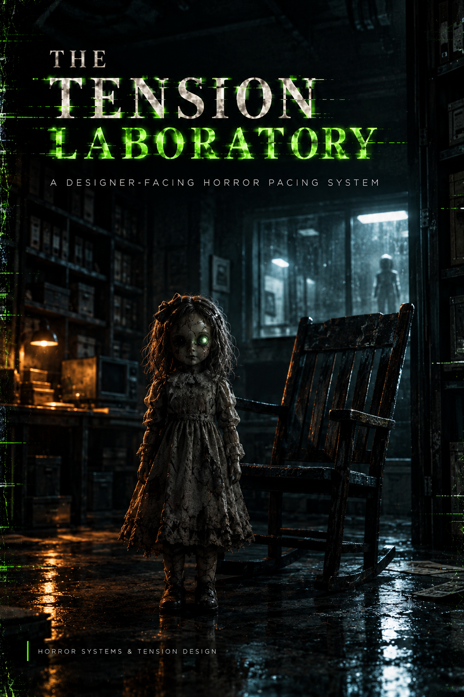
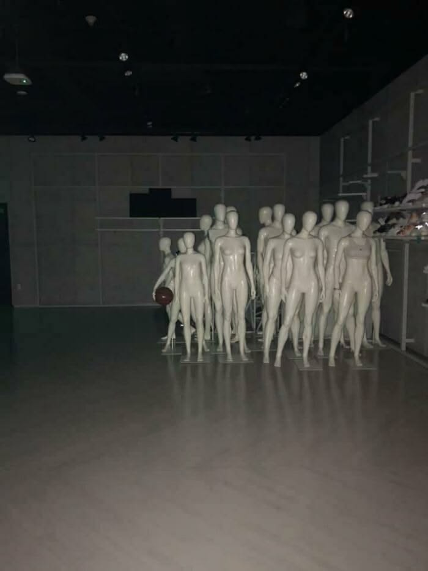
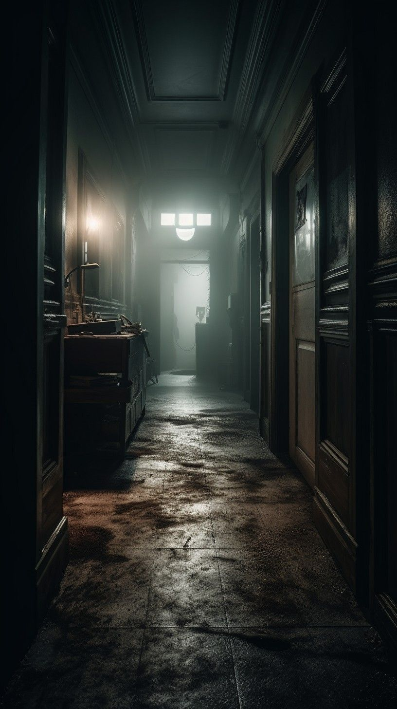
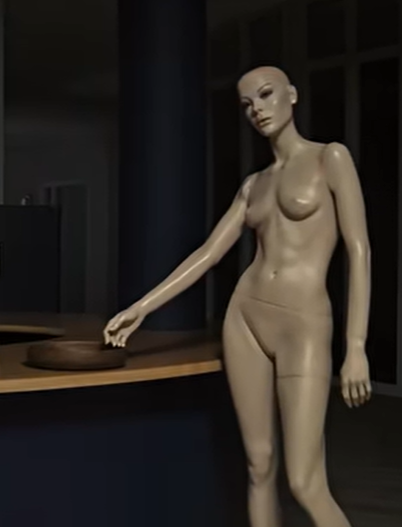
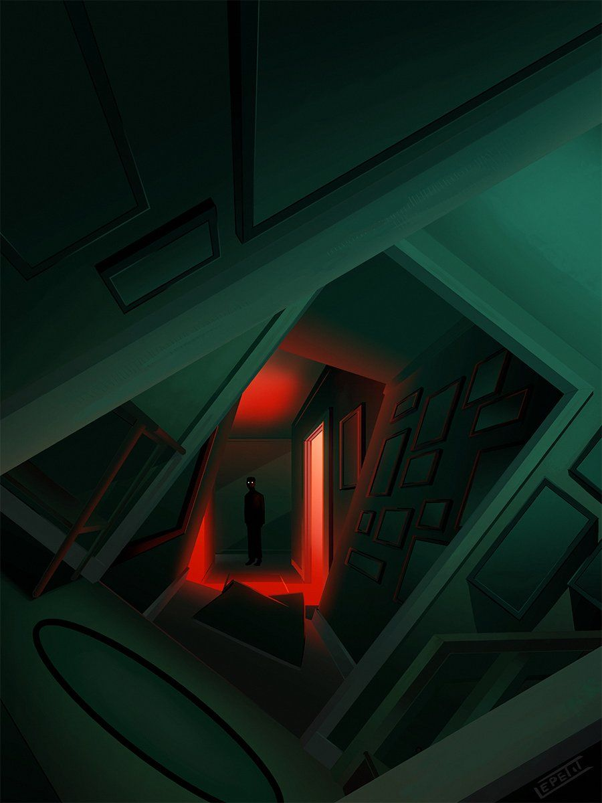
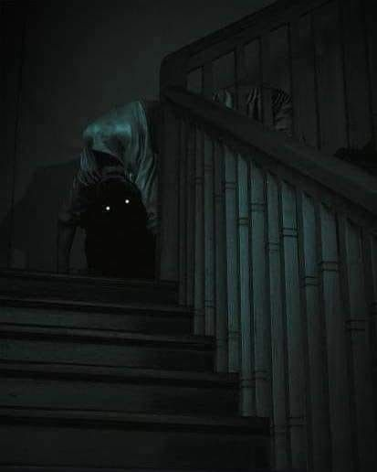
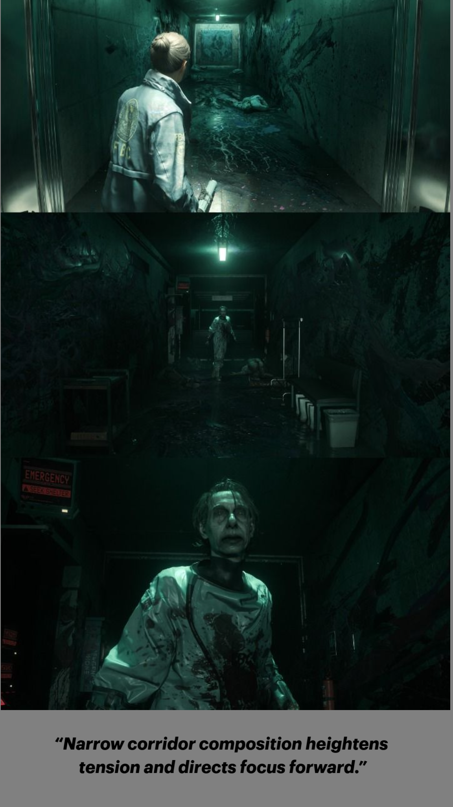
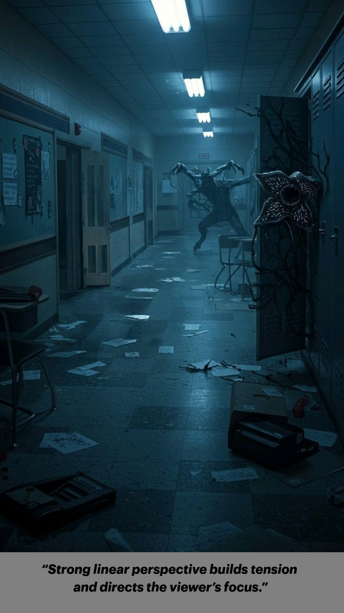

The line trace that couldn't see its own target
The visibility trace had Ignore Self enabled, so it skipped the very object it was trying to detect. Unchecking it fixed observation. It is a small bug, but exactly the kind a case study should record.
Horror Systems · Tension Design · Technical Design
Formerly Unreliable Reality. The prototype grew into a lab.
A measurable, designer-facing horror pacing system. Horror events don't just happen. They ask permission, and a Director decides, and writes down why.

Director actor, tension clamp, approval gate, observation by line of sight, unseen timer, Move event.
Disappear / Reappear: collision while hidden, reset logic.
Milestone 0: audit the real graphs against the dossier.
Central selection, pacing rules, debug overlay, playtests, a portfolio slice.
This project started with a short video. It showed a mechanic I loved: objects in a horror space that change when you stop looking at them. The creator was selling it as an asset for €11.
My reaction was simple: I can do better.
I don't mean cheaper or flashier. I mean a different kind of thing. A pack gives you an object that moves when you look away. I wanted a system that decides when an anomaly is worth triggering, why it was chosen, and what the player gets back afterwards (relief). One designer can open, tune, test and understand it.
North star Create deliberate rhythms of anticipation, pressure, uncertainty and relief. The system chooses meaningful events, respects pacing constraints, and explains every decision to the designer. It does not scare the player as often as possible.
Most horror triggers are timers with a dice roll attached. When the timer expires, something happens. That makes scares predictable, noisy and sometimes unfair: an event lands right after a high-pressure moment, or while the player can see exactly how the trick works.
Events always happen at the same moments, so the player anticipates them.
Events ignore what the player has recently experienced.
Unpredictable to the player, controllable to the designer.
Predictable System → Unpredictable Experience

| Principle | What it means in practice |
|---|---|
| Unreliable, not constantly active | Objects can change while unseen, but an eligible moment does not have to produce an event. |
| Pacing over volume | After heavy pressure, prefer a quieter anomaly or a recovery window over automatic escalation. |
| Fairness through consistency | Events follow stable rules. They can surprise, but the system never ignores its own constraints. |
| Designer visibility | Debug tools show eligibility, selection, approval and rejection reasons. |
| Proxies, not mind-reading | Tension variables are game-state signals. I test the player's actual response separately. |
Something might have changed while I was looking away.
I'm not sure this space is reliable.
I can inspect, track and avoid, but I can't fully control the room.
The game lets the pressure settle. It isn't constantly punishing me.
The core loop works: detect whether an object is in view, accumulate unseen time, ask a director for permission, and trigger an environmental anomaly.
| System | State | Status |
|---|---|---|
BP_HorrorDirector | Placed actor tracking CurrentTension, MaxTension, a minimum event threshold, a global enable switch, a debug flag and an event probability. | Built |
| Tension control | AddTension and ReduceTension clamp to 0–MaxTension. Tested: 30 then 80 caps at 100; reducing by 25 lands on 75. | Built · tested |
| Approval gate | CanTriggerHorrorEvent checks the enable flag and tension range. RequestHorrorEvent adds the probability roll. Tested at probability 1.0 (passes) and 0.0 (denies). | Built · tested |
| Observation | Camera direction, distance and line of sight decide whether an object is observed. | Built |
| Unobserved timing | TimeUnobserved accumulates while unseen and resets on observation. A retry cooldown blocks immediate repeat requests. | Built |
| Move event | Instant relocation via MoveOffset, working. | Built |
| Disappear / Reappear | Built. The graph needs a fresh re-test (collision while hidden, reset logic) before I mark it complete. | Re-test |
The visibility trace had Ignore Self enabled, so it skipped the very object it was trying to detect. Unchecking it fixed observation. It is a small bug, but exactly the kind a case study should record.
GetActorOfClass returned nothing usable in this setup, which caused a runtime error. The fix: expose HorrorDirector as Instance Editable, assign the level instance to each object, and validate before use. Automatic registration comes later.
Right now, each object asks the Director for permission. That is the prototype. The real system flips it: objects report their state, and the Director chooses one eligible object and one allowed event. That ends the competition between objects and puts every pacing rule in one place.
Every object competes. Pacing rules would have to be repeated or scattered.
PLAYER + WORLD STATE
|
v
OBSERVATION INPUTS (per object)
observed? | unseen time | line of sight | object state
|
v
BP_HORRORDIRECTOR
1. Receive candidate states
2. Check tension and global rules
3. Build the eligible object list
4. Apply weights and event constraints
5. Select one event and record why
|
v
SELECTED BP_UNRELIABLEOBJECT executes the action
|
v
COOLDOWN + RECOVERY + DEBUG HISTORY
One decision point. Every pacing rule lives in one place, and every decision is recorded.

The object owns the possibility.
The director owns the timing.
An object does not simply decide "I am going to scare the player now." It reports what it could do. Keeping horror behaviours decoupled from the global tension logic means new objects become clients of the same system without rewriting the Director.
| System | Owns | Never owns |
|---|---|---|
BP_HorrorDirector | Global enable, tension, probability, pacing, candidate selection, exclusions, debug history. | Mesh-level visual details for every object. |
BP_UnreliableObject | Its own observation state, local settings, supported events, and event execution. | Competing with every other object indefinitely. |
E_HorrorEventType | The physical actions: Move, DisappearReappear, Rotate, Scale. | Pacing roles or eligibility rules. |
| Debug UI | Displaying system state and decision history. | Deciding gameplay outcomes. |
Can change its appearance when the player isn't observing it.
Can request a change in position or orientation.
Can request flickering, interruption or altered behaviour.
Can request a state change when the player returns.


| State | Meaning | Moves on when |
|---|---|---|
| Observed | In the player's view cone and range, with clear line of sight. | Player looks away. |
| Unobserved Tracking | Unseen timer is accumulating. | Delay and cooldown are satisfied. |
| Eligible | Object and global requirements all pass. | Director selects it, or it keeps waiting. |
| Event Pending | Request approved; duplicates blocked. | Event begins. |
| Executing | The event is in progress. | Event completes or cancels. |
| Cooldown / Recovery | Object and/or system rests. | Cooldown ends and other rules pass. |
| Disabled / Invalid | Not permitted, or reference lost. | Re-enabled or re-registered. |
Probability is evaluated only after all mandatory checks pass.
The current tension, timing and context allow the event to contribute to the intended experience.
The request is rejected because the timing would create too much pressure, repeat an event too quickly, or simply be less effective.
Denial is invisible to the player. They simply experience a world in which sometimes nothing happens. That absence is part of the system.
I keep two separate labels. What the object does (Move, DisappearReappear, Rotate, Scale) is different from what the moment is for in the pacing.
| Dramatic category | Purpose |
|---|---|
| Anticipation | Suggest danger without a major payoff, such as a distant shift or a light change. |
| Anomaly | Undermine confidence in the environment: disappear, rotate, scale, relocate. |
| Direct Threat | Immediate danger. Only after anomaly pacing is stable. |
| Recovery | A quiet window, reduced probability, a neutral environment. |
NO_CANDIDATES.I'm keeping this deliberately small: registry first, then print the count, then select one object, then trigger its existing disappear/reappear. Weighted selection and advanced tension logic come only after that slice passes.
CurrentTension is currently a controllable value. The next step is deriving it from game conditions. These signals are gameplay proxies, not a measurement of the player's emotions. It is a designer-facing control signal that says how much pressure the system should be applying.

| Signal | Question it answers | Example inputs |
|---|---|---|
| Exposure | How vulnerable is the player right now? | Dangerous area, no cover, threat nearby. |
| Uncertainty | How incomplete or unreliable is the information? | Threat not visible, contradictory clues, displaced familiar object. |
| Recent Pressure | How intense has the last stretch been? | Recent chase or close call, short time since a high-intensity event. |
| Recovery | Has the player had room to settle? | Time since pressure, safe area access, low recent event count. |
BasePressure = (Exposure * ExposureWeight)
+ (Uncertainty * UncertaintyWeight)
+ (RecentPressure * RecentPressureWeight)
TensionTarget = Clamp(BasePressure - RecoveryRelief, 0, 1) * 100
CurrentTension moves gradually toward TensionTarget
This is a starting point. I'll display the raw inputs first, tune the weights by hand, and smooth the movement so no single signal causes a jarring swing.
Only the minimum threshold and the maximum bound are implemented today. The bands are the plan.
Recovery is a rule, not just a subtraction. After a chase, the Director can choose silence or a quiet anomaly over another attack. That is what makes the pacing deliberate.
A small model of the design above, running in your browser. It follows the selection rules and rejection codes from the dossier, so you can see why nothing happened. It is not a capture of the Unreal build. The five objects, their allowed events and the default weights are placeholders for this demo.
Where is the player looking?
…
Signals (proxies)
Director rules
Events the Director allows
Decision log (repeats collapsed)
Why nothing happened (counts)
Compare two pacing configurations (like my player-test protocol, but with a toy player)
| Measured in the sim | A · frequent | B · deliberate |
|---|---|---|
| Press the button. | ||
Numbers come from this toy simulation with a scripted looker. They are not player data and say nothing about how scary either setup is.
A designer should be able to answer "why did nothing happen?" without opening five graphs. Horror systems get hard to tune when you can't see why something happened, so the debug layer exposes the hidden decision-making.
I start with Print String and on-screen text, and build a UMG overlay only once the data is reliable.

TENSION LABORATORY — DIRECTOR DEBUG Tension: 42 / 100 Band: BUILDING Events enabled: YES Recovery window: NO Registered objects: 5 Eligible objects: 2 Selected object: Chair_A Selected action: DisappearReappear Decision: APPROVED Recent event: Lamp_B / Anomaly / 18s ago
| Setting | Purpose | Status |
|---|---|---|
UnobservedDelay | How long it must be unseen. | Built |
EventRetryCooldown | Minimum time between attempts. | Built |
MoveOffset / ReappearOffset | Per-instance movement and relocation. | Built, config to verify |
bCanBeSelected | Opt in or out of Director selection. | Planned |
AllowedEventTypes | Which actions this object supports. | Planned |
ObjectWeight | Relative selection chance. | Planned |
DISABLEDGlobal events are off.TENSION_TOO_LOWBelow the minimum.RECOVERY_ACTIVEA recovery constraint is suppressing the event.OBJECT_OBSERVEDThe candidate is visible to the player.UNSEEN_DELAYNot unseen long enough.OBJECT_COOLDOWNObject can't attempt another event yet.EVENT_UNSUPPORTEDThe object doesn't allow this action.NO_CANDIDATESNothing satisfies every requirement.PROBABILITY_ROLL_FAILEDPassed hard gates, lost the chance roll.Every player-experience claim stays a hypothesis until it's been tested and recorded. I only add a result here once I've written it down.
| Test | Setup | Expected |
|---|---|---|
| Visible | In range, in view, unobstructed. | Observed true; timer resets. |
| Outside view | Turn away, stay near. | Observed false; timer grows. |
| Blocked | Wall between camera and object. | Not reported as observed. |
| Distance limit | Move past ObservationDistance. | Not observed. |
| Probability bounds | Test 0 and 1 repeatedly. | 0 never approves; 1 always passes the roll. |
| Missing Director | Clear the reference. | No crash; clear warning. |
| Reappearance | Trigger unseen, look back at different points. | Object relocates and returns; no visible teleport under intended conditions. |
| Multiple objects | Three or more candidates, debug on. | One event at a time; selection explainable in the log. |
Key questions: did an event feel earned, random, repetitive or unfair? Was there enough quiet after tension? When did you stop trusting the environment?
Each milestone is small. I don't start the next until the current one passes in PIE and the result is written down. (Statuses as of dossier v0.2. The audit may move some to Built.)
| Risk | Mitigation |
|---|---|
| Too many per-frame line traces | Profile first, then throttle or stagger observation checks. |
| Actor reference is None | Instance Editable plus IsValid checks now; central registration later. |
| Hidden actor still collides | Test it; deliberately disable and restore collision where needed. |
| Reappearance inside geometry | Designer-set offsets first; trace and floor validation or authored targets later. |
| Player looks back mid-event | Define the policy explicitly: cancel, reverse, finish, or complete hidden. |
| Simultaneous triggers | Central selection, bEventPending, a global event lock, cooldowns. |
| Zero-probability edge case | Use a strict comparison or explicit 0/1 handling, then retest. |
| Noisy debug logs | DebugMode toggle, reason codes, short recent-event history. |
| Tension mistaken for fear | Call the signals proxies and validate with player feedback. |
The interesting part isn't that an object can move or change. Those effects are relatively simple.
The difficult question is:
"When should the game allow the player to notice?"
That question pushed the project beyond individual scares and into designing the rules governing when horror is allowed to happen.
| Evidence | What it proves | Status |
|---|---|---|
| Playable vertical slice | It works in a real environment, not just in isolated graphs. | Planned |
| Architecture diagram | Responsibilities and data flow are clear. | Drafted above |
| Designer tuning guide | A designer can safely adjust weights, thresholds, cooldowns and rules. | Planned |
| Debug capture | The Director shows what it chose and why it rejected the alternatives. | Planned |
| Test protocol and results | Decisions come from observed player behaviour. | Protocol written, results pending |
| Before / After comparison | Each iteration had a stated reason and a measured goal. | Planned |
| Known limitations | I acknowledge trade-offs rather than hide them. | Listed on this page |
Portfolio story I built a director that makes environmental horror deliberate and tuneable. It began as an observation-gated object anomaly and is becoming a centralised event selector with pacing constraints and designer-facing diagnostics.
The goal isn't to make objects behave strangely. Anyone can do that for €11. The goal is a horror pacing system a designer can understand, tune, test and improve, with the evidence to show every decision made the experience better.
